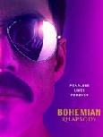

Rai 1

18:45
L'Eredità
20:00
Tg1 NOTIZIARIO.
20:30
Soliti Ignoti - Il ritorno
21:25
Bohemian Rhapsody
23:50
Porta a portay
06:00
RaiNews NOTIZIARIO.
07:00
Tg1 NOTIZIARIO.
07:10
Unomattina
07:30
TG1 LIS NOTIZIARIO.
07:33
Che tempo fa
07:35
Unomattina
07:50
Che tempo fa
07:52
Unomattina
08:00
Tg1 NOTIZIARIO.
08:30
Che tempo fa
08:32
Unomattina
09:00
Tg1 NOTIZIARIO.
09:07
Che tempo fa
09:09
Unomattina
09:30
Tg1 Flash NOTIZIARIO.
09:35
Tg Parlamento NOTIZIARIO.
09:40
Meteo verde
09:41
Unomattina
09:50
Tg1 NOTIZIARIO.
09:55
Storie italiane
11:55
E' sempre mezzogiorno
13:30
Tg1 NOTIZIARIO.
14:00
Oggi è un altro giorno
15:55
Il paradiso delle signore St 6 Ep 53 - Episodio 53
16:45
Tg1 NOTIZIARIO.
16:55
TG1 Economia
17:00
Che tempo fa
17:05
La vita in diretta
18:45
L'Eredità
20:00
Tg1 NOTIZIARIO.
20:30
Soliti Ignoti - Il ritorno
21:25
Bohemian Rhapsody
23:50
Porta a porta
23:55
TG1 Sera NOTIZIARIO.
00:01
Porta a porta
01:30
RaiNews NOTIZIARIO.
01:58
Che tempo fa
02:05
Movie Mag
02:30
Il commissario Manara
03:25
RaiNews NOTIZIARIO.
Quattro Oscar e due Golden Globe al film che celebra la gloria dei Queen e del leggendario Freddie
Mercury, interpretato da uno straordinario Rami Malek. Dalla genesi della band alla consacrazione
sul palco del Live Aid, la storia di uno dei gruppi rock piu' amati di tutti i tempi.
- Titolo Originale: Bohemian Rhapsody
- Genere: Biografia
- Durata: 2h 10m
- Anno: 2018
- Paese: USA, UK
- Regia: Bryan Singer
- Cast: Rami Malek, Lucy Boynton, Gwilym Lee, Ben Hardy, Joseph Mazzello
21:20
Bohemian Rhapsody (Film)

Quattro Oscar e due Golden Globe al film che celebra la gloria dei Queen e del leggendario
Freddie Mercury, interpretato da uno straordinario Rami Malek. Dalla genesi della band alla
consacrazione sul palco del Live Aid, la storia di uno dei gruppi rock piu' amati di tutti i
tempi.
- Titolo Originale: Bohemian Rhapsody
- Genere: Biografia
- Durata: 2h 10m
- Anno: 2018
- Paese: USA, UK
- Regia: Bryan Singer
- Cast: Rami Malek, Lucy Boynton, Gwilym Lee, Ben Hardy, Joseph Mazzello